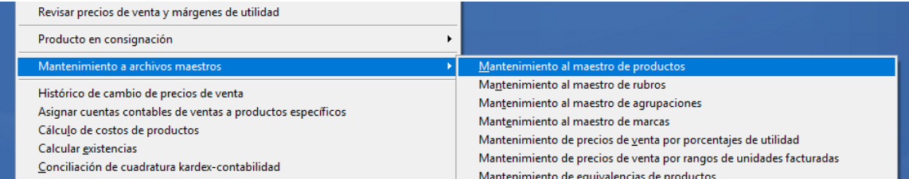
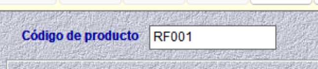
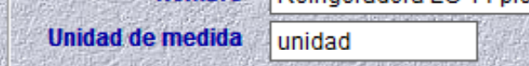
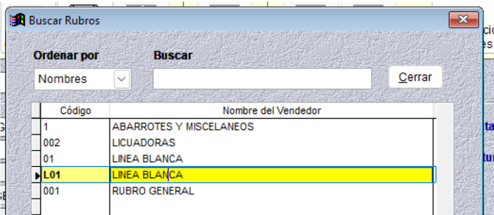
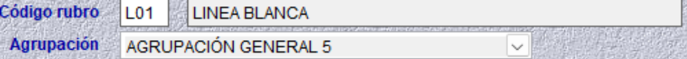
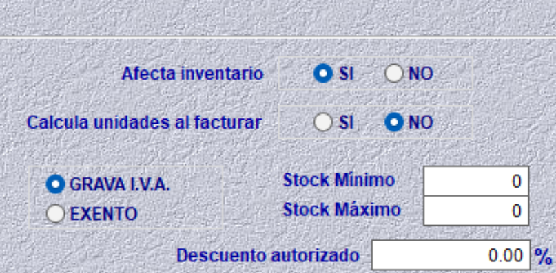
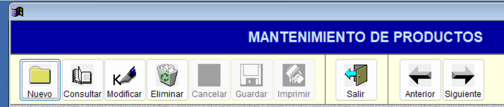

Catálogo de Productos
Desde el menú de Inventarios, seleccionamos Mantenimiento de archivos Maestros, y luego Mantenimiento al maestro de productos.
Al hacer clic nos abrirá la siguiente ventana:
La mayoría de los campos que aparecen en esta ventana no se utilizarán. Solo será necesario completar los que se mencionan a continuación. Para crear un nuevo producto:
Hacer clic en Nuevo
Agregar un código de producto: Este campo permite ingresar hasta 14 caracteres, los cuales pueden ser letras, números o una combinación de ambos. Se recomienda usar un formato que facilite la identificación del producto.Ejemplo: LB-RF12-SG, ó RF001.
Agregar nombre: se debe ingresar el nombre del producto tal como desea que aparezca en el sistema. Se recomienda usar un nombre claro y específico para facilitar su identificación. Ej: Refrigeradora LG 14 pies, Laptop HP Pavilion 15, etc.
Agregar unidad de medida (opcional): debe completarse según el tipo de producto. Solo es necesario ingresarlo si el producto requiere una unidad específica para su gestión.
Agregar código de rubro: Si conoce o recuerda el código del rubro creado puede digitarlo. En caso de no recordarlo, puede presionar F4 sobre esa casilla, lo que abrirá una ventana de ayuda con todos los códigos ya creados. Selecciona el código y presiona Enter.
Automáticamente se rellena el campo de Agrupación
Agregar código de marca(opcional): Funciona de la misma manera que el código de rubro. La marca se crea desde el mantenimiento de marcas. Para agregarla al producto, solo debe presionar F4 y seleccionar el código de la marca que desea añadir.
Seleccionar Afecta inventario: Este campo indica al sistema si lo que se está ingresando es un producto o un servicio. Si se trata de un producto tangible, se selecciona «Sí» para indicar que afecta al inventario, ya que tiene existencias. En el caso de ser un servicio, se selecciona «No», ya que no requiere gestión de inventario.
Seleccionar Grava Iva: La mayoría de productos o servicios contienen iva, se le indica que sí.
Agregar precio de venta: Si ya cuenta con los precios de venta, puede ingresarlos en esta sección. El sistema asignará automáticamente el precio correspondiente según se vayan realizando las facturaciones. Además, los nombres de los tipos de precio son modificables.
Una vez que haya ingresado toda la información correspondiente al producto, debe hacer clic en Guardar. Si desea consultar, modificar o eliminar un producto, simplemente hace clic en los botones correspondientes. Para ver el producto anterior o siguiente, puede utilizar las flechas de navegación.
Una vez que el catálogo de productos ha sido estructurado correctamente, puede proceder a realizar el inventario físico.